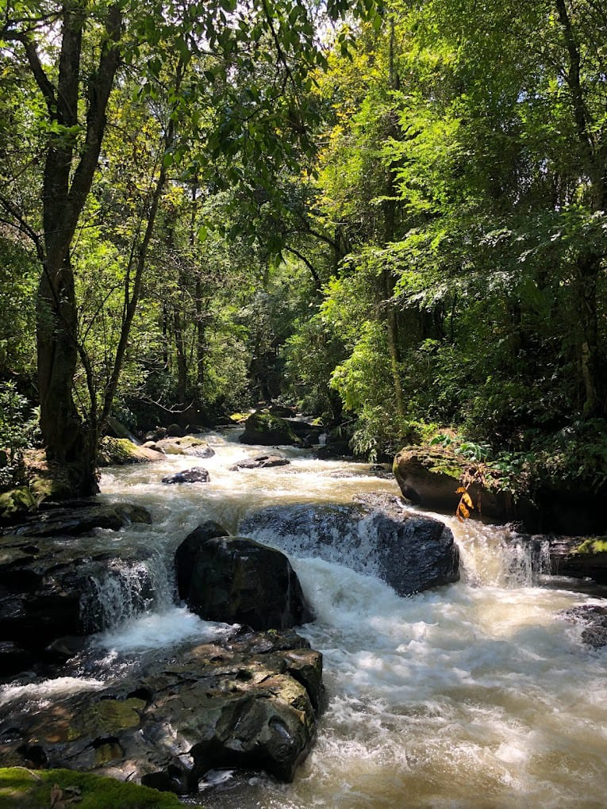
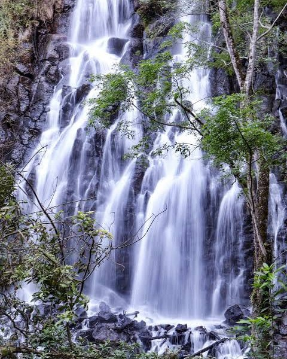

CASCADA EL MOLINO
La cascada El Molino es un hermoso atractivo natural ubicado en Valle de bravo, Estado de Mexico. Se caracteriza por su caida de agua sobre las rocas , el sonido relajante del rio y el paisaje verde que lo rodea . Es un lugar ideal para disfrutar del aire fresco ,caminar por senderos y apreciar la belleza natural de la region. Puedes encontrar paisajes naturales vegetacion abundante, rocas y coerrientes de agua ,arboles como pinos y oyameles ,caracteristicos de los bosques de la zona Actividades ,caminar por los alrededores , observar el paisaje y tomar fotografias . Tranquilidad: el sonido del agua y el ambiente boscoso hacen de este lugar una opcion para decanzar y conectar con la naturaleza .

CASCADA VELO DE NOVIA
La cascada Velo de Novia es uno de los atractivos naturales mas famosos de valle de bravo. Se encuentra en una zona boscosa de Avandaro y cuenta con una imprecionante caida de agua de aproximadamente 35 metros de altura. Su nombre se debe a que el agua, al desender ,parece un largo velo blanco de novia. La Cascada Velo de Novia es importante para el turismo de la naturaleza de Valle de Bravo ,ya que permite a los visitantes conocer los bosques y dirfrutar de sus paisajes .Para conservar este lugar , es fundamental no arrojar basura ,respetar las plantas y los animales ,y caminar por los senderos establesidos .

LAGUNA NEGRA
La laguna negra es un sitio natural de los alrededores de Valle de Bravo,Estado de Mexico .La laguna Negra es una opsion para quienes buscan conocer lugares naturales menos concuridos y disfrutar de un ambiente tranquilo. Al visitar este tipo de espacios ,es importante no dejar basura,evitar perturbar a los animales y respetar las indicasiones de conservacion .La laguna negra es un ricon natural de los alrededores de valle de bravo que destaca por su ambiente tranquilo y su paisaje .Es un lugar de interes para quienes desean explorar la naturaleza,disfrutar de la vegetacion y conocer la riqueza natural de la region. Su conservacion es imortante para proteger el entorno y la biodiversidad.